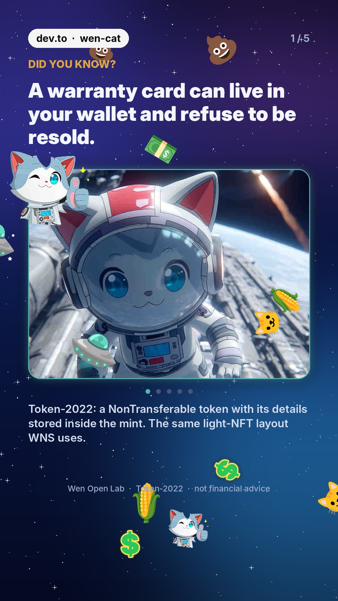
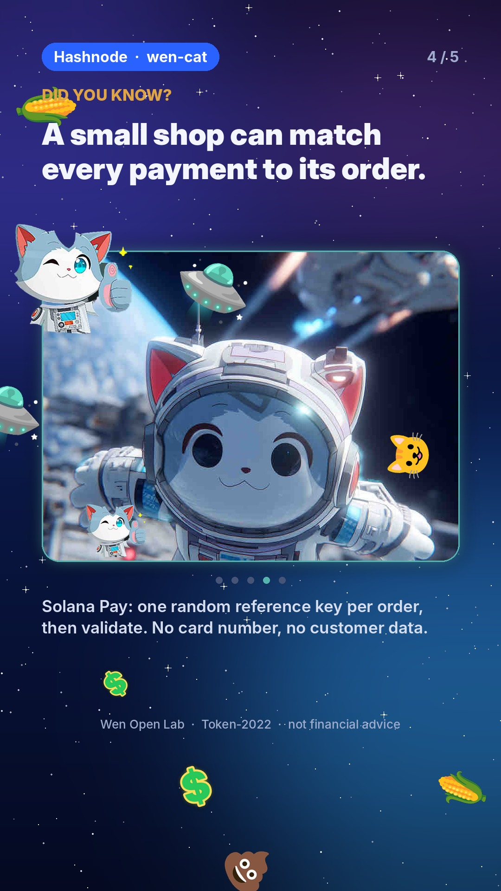

Dieci guide: il Lab in parole semplici✎
- 0 · Roadmap
- 1 · Ricevute e garanzia
- 2 · Royalty per i creatori
- 3 · Fatture B2B
- 4 · Ponte pagamenti
- 5 · Simulatore
- 6 · Devnet: ripetilo
- 7 · Cassa
- 7.1 · Sicurezza
- ✓ · Catena della fiducia
- ★ · Vantaggi e usi
- ✎ · Dieci guide
- ▶ · Video
- ? · Scoperte dei lettori
- 8 · Negozi: plugin e skill

Wen è nato come una poesia divisa in mille miliardi di token ed è cresciuto fino a diventare WNS, uno standard NFT aperto su Token-2022 di Solana. Il Lab trasforma quell'eredità in piccoli strumenti testati. Wen non è stato fatto per pochi: il suo standard, il suo codice e la sua storia sono aperti a tutti, e ogni guida qui sotto riporta a quella fonte. Questa nota le raccoglie in dieci guide: ognuna parte da un «lo sapevi?», mostra le poche righe di codice che contano, il test che le dimostra, chi ci guadagna e dove il modello si ferma. Due modelli sono nuovi oggi: un verificatore di ricevute e un ispettore di token. 37 verifiche superate.
1 · Un certificato di garanzia che vive nel portafoglio

Le schede di carta si perdono e le ricevute in PDF affondano nella casella di posta. Token-2022 trasforma un acquisto in un token unico: zero decimali, offerta bloccata a 1, i dettagli salvati dentro il mint stesso, e l'estensione NonTransferable perché la garanzia resti all'acquirente. La catena conserva solo un hash SHA-256 dell'ordine, mai l'ordine: l'acquirente tiene il JSON e può dimostrare la corrispondenza in seguito. È lo stesso layout di NFT leggero usato dal Wen New Standard (WNS).
Il filo di Wen. Il layout è quello del Wen New Standard: lo stesso NFT leggero che WNS, nato nella comunità Wen, ha portato su Token-2022. Wen lo ha aperto a tutti, così la ricevuta di un negozio può usarlo liberamente come un meme.
Righe chiave · lab/code/src/01-receipt-nft.ts · Apache-2.0
// extensions first, then the mint, then the metadata
createInitializeMetadataPointerInstruction(mint, merchant, mint, TOKEN_2022_PROGRAM_ID),
createInitializeNonTransferableMintInstruction(mint, TOKEN_2022_PROGRAM_ID),
createInitializeMintInstruction(mint, 0, merchant, null, TOKEN_2022_PROGRAM_ID),
// ... metadata fields: order_hash, warranty_until, sku
createMintToInstruction(mint, buyerAta, merchant, 1, [], TOKEN_2022_PROGRAM_ID),
// lock supply at exactly 1
createSetAuthorityInstruction(mint, merchant, AuthorityType.MintTokens, null, [], TOKEN_2022_PROGRAM_ID),Come è stato verificato
PASS M1 supply is exactly 1, decimals 0, mint authority removed
PASS M1 soulbound receipt cannot be transferred
PASS M1 nobody can mint a second copyUtile per
- Acquirenti: una garanzia che non si può perdere né falsificare con un PDF modificato.
- Negozi: prova d'acquisto senza conservare dati personali su un registro pubblico.
Limiti, detti chiaramente
- Il token è una prova; le condizioni di garanzia seguono comunque la politica del negozio e il diritto dei consumatori.
- Soulbound non vuol dire impossibile da perdere: un portafoglio perso perde il certificato, e il negozio lo riemette dopo i propri controlli.
Lab: Fase 1 · Ricevute e garanzia · Guida completa su dev.to: How to model a warranty card as a soulbound Token-2022 token (devnet walkthrough)
2 · Un pagamento che richiede un numero di fattura

I commercialisti perdono ore ad abbinare pagamenti che arrivano senza riferimento. Tre estensioni Token-2022 trasformano un token semplice in un binario di regolamento con regole: l'account ricevente esige un memo (MemoTransfer), ogni nuovo account nasce congelato finché l'emittente non lo approva (DefaultAccountState), e una commissione percentuale con tetto viene trattenuta dal programma del token stesso (TransferFeeConfig). Non serve alcun programma on-chain personalizzato. Il memo deve essere l'istruzione immediatamente precedente al trasferimento.
Il filo di Wen. WNS ha mostrato che le regole possono vivere dentro il token, non in ogni app. Il binario delle fatture porta la stessa idea dalla comunità Wen alla contabilità: è il token stesso a rifiutare un pagamento senza numero.
Righe chiave · lab/code/src/03-b2b-invoice.ts · Apache-2.0
export function buildPayInvoice(args) {
return [
...(args.invoiceId ? [memoInstruction(`invoice:${args.invoiceId}`, args.payer)] : []),
createTransferCheckedWithFeeInstruction(args.from, args.mint, args.to, args.payer,
args.amount, DECIMALS, expectedFee(args.amount), [], TOKEN_2022_PROGRAM_ID),
];
}Come è stato verificato
PASS M3 payment WITHOUT invoice number is rejected
PASS M3 payment to a NOT approved company is rejected (account frozen)
PASS M3 fee cap works (fee on 100,000 is 50, not 250)Utile per
- Contabilità: ogni pagamento porta il suo numero di fattura on-chain.
- Reti d'impresa: solo le controparti approvate possono detenere il token.
Limiti, detti chiaramente
- Un memo è pubblico: un numero di fattura, mai nomi o dati personali.
- La regola del memo controlla che un memo esista, non che il numero sia giusto: riconcilia ogni pagamento con le tue fatture (correzioni dei lettori, 9 novembre).
- Un vero token di regolamento è emesso da un soggetto autorizzato; questo è un modello, non una stablecoin.
Lab: Fase 3 · Fatture B2B · Guida completa su Hashnode: A payment that refuses to arrive without an invoice number
3 · Una regola di royalty dentro l'NFT

Un mint Token-2022 può portare un TransferHook: l'indirizzo di un programma che viene eseguito a ogni trasferimento, in ogni portafoglio e marketplace. Se il programma dice no, il trasferimento non avviene. WNS lo usa per le royalty dei creatori. La guida mostra il passo che ogni acquirente e portafoglio dovrebbe fare per primo: leggere l'hook, e leggere anche la sua autorità, perché l'autorità decide chi può cambiare la regola domani. Spostare un token con hook richiede TransferChecked con gli account aggiuntivi dell'hook.
Il filo di Wen. È qui che Wen è cominciato tecnicamente: WNS fa rispettare le royalty dei creatori con un transfer hook. Il codice usa l'indirizzo del programma royalty di WNS pubblicato nella Wen Program Library aperta.
Righe chiave · lab/code/src/02-royalty-transfer.ts · Apache-2.0
const info = await getMint(connection, mint, 'confirmed', TOKEN_2022_PROGRAM_ID);
const hook = getTransferHook(info); // { programId, authority }
const isWnsRoyalty = hook?.programId.equals(WNS_ROYALTY_PROGRAM_ID) ?? false;
// transfer so that the hook runs: extra accounts are resolved on-chain
const ix = await createTransferCheckedWithTransferHookInstruction(
connection, source, mint, destination, owner.publicKey, 1n, 0, [], 'confirmed', TOKEN_2022_PROGRAM_ID);Come è stato verificato
PASS M2 NFT mint created with a transfer hook
PASS M2 hook program read from the mint = WNS royalty distributionUtile per
- Creatori: una regola che viaggia con l'opera, non una promessa di ogni marketplace.
- Acquirenti e agenti: la regola è leggibile dalle macchine con una sola chiamata RPC.
Limiti, detti chiaramente
- Il test locale legge l'hook; il programma royalty di WNS in sé non viene eseguito nella VM locale.
- Un hook fa rispettare ciò che dice il suo programma, errori compresi: leggi il codice e gli audit.
Lab: Fase 2 · Royalty per i creatori · Guida completa su dev.to: How to read a Token-2022 transfer hook before you move an NFT
4 · Una chiave di riferimento per ordine

Solana Pay dà a ogni ordine una chiave reference casuale e nuova. Il portafoglio la aggiunge al trasferimento come account di sola lettura, così il negozio può trovare la transazione tramite quella chiave, poi convalidare destinatario, importo, token, riferimento e memo prima di segnare l'ordine come pagato. Trovare non è fidarsi: findReference dice solo che una transazione menziona la chiave; validateTransfer controlla il denaro. Un webhook poi avvisa il sistema del negozio, il ruolo che ha il callback di un acquirer di carte.
Il filo di Wen. Un link Solana Pay funziona per qualsiasi token, e il codice del Lab elenca WEN con il suo unico indirizzo reale. La regola che viene da Wen vale anche qui: il negozio controlla l'indirizzo, mai il nome.
Righe chiave · lab/code/src/04-solana-pay-bridge.ts · Apache-2.0
const reference = (await generateKeyPairSigner()).address; // random, never reused
const url = encodeURL({ recipient, amount, splToken, reference,
label: 'Wen Open Lab demo shop', message: `Order ${orderId}`, memo: `order:${orderId}` });
// later
const found = await findReference(rpc, req.reference, { commitment: 'confirmed' });
await validateTransfer(rpc, found.signature, { recipient, amount, splToken, reference, memo }, { commitment: 'confirmed' });Come è stato verificato
PASS M4 payment link round-trips: recipient, amount, token, reference, memo
PASS M4 every order gets a unique referenceUtile per
- Piccoli venditori: riconciliazione senza un conto presso un processore.
- Clienti: nessun numero di carta e nessun dato personale va al server del negozio.
Limiti, detti chiaramente
- Un negozio che ha bisogno di importi stabili dovrebbe accettare un asset stabile; il modello non converte nulla.
- Rimborsi, contestazioni e tasse restano responsabilità del negozio.
Lab: Fase 4 · Ponte pagamenti · Guida completa su Hashnode: One reference key per order: matching Solana Pay payments without guesswork
5 · Testare Token-2022 senza rete

LiteSVM carica i veri programmi SPL Token-2022 e Memo nel processo di test. L'ambiente di test del Lab è fatto di cinque helper: send, fund, rent, account e check. Un decodificatore collega le transazioni di @solana/web3.js a LiteSVM, il blockhash viene fatto scadere dopo ogni invio così i passaggi ripetuti restano indipendenti, e i fallimenti tornano come valori con i loro log. I test utili sono quelli che si aspettano un rifiuto e controllano il log del programma che lo spiega.
Il filo di Wen. Il lancio di Wen è stato uno stress test pubblico che Solana ha superato. Testare in pubblico, e poi ripetere, è l'abitudine che il Lab conserva da quel giorno.
Righe chiave · lab/code/test/run-litesvm.ts · Apache-2.0
function send(ixs, signers) {
const tx = new Transaction().add(...ixs);
tx.feePayer = signers[0].publicKey;
tx.recentBlockhash = svm.latestBlockhash();
tx.sign(...signers);
const res = svm.sendTransaction(getTransactionDecoder().decode(tx.serialize()));
svm.expireBlockhash();
return res instanceof FailedTransactionMetadata
? { ok: false, err: res.toString(), logs: res.meta().logs() } : { ok: true, logs: res.logs() };
}Come è stato verificato
37 checks across six models
ALL CHECKS PASSEDUtile per
- Sviluppatori: un ciclo di test veloce per Token-2022 senza airdrop o limiti di frequenza.
- Revisori: ogni affermazione su queste pagine ha dietro una riga di test.
Limiti, detti chiaramente
- I programmi non caricati non vengono eseguiti: testa ciò che puoi vedere, e di' ciò che non puoi.
- Verde in locale non significa pronto per la mainnet: devnet, revisione e audit vengono ancora dopo.
Lab: Registro delle verifiche · Guida completa su dev.to: Testing Token-2022 in LiteSVM: 37 checks, no network
6 · Commissioni carta e commissioni on-chain, in cinque formule

Il simulatore del Lab confronta l'acquiring con carta e i pagamenti on-chain con cinque formule pubbliche e gira nel browser. Con valori illustrativi (2.000 ordini al mese, media di 40 $, carta a 2,9% + 0,30 $, chargeback dello 0,5% a 15 $, due giorni di regolamento) il lato carta costa circa 3.470 $ al mese e tiene circa 5.333 $ in transito. Sul lato on-chain la parte di rete è 0,02 SOL per l'intero mese, e quasi tutto il costo è la conversione in fiat dello 0,5%: 400 $. Il punto non è chi vince; è dove sta davvero il costo.
Il filo di Wen. Se un negozio accetta mai WEN, il simulatore lo dice chiaramente: WEN porta comunità e attenzione alla cassa, gli importi stabili sono compito delle stablecoin. Prima l'utilità, nessuna promessa.
Righe chiave · la pagina del simulatore · Apache-2.0
Revenue = orders × average order
Card payment fees = revenue × card fee % + orders × fixed fee
Chargeback costs = orders × chargeback rate × (average order + fee per chargeback)
On-chain fees = orders × network fee in SOL × SOL price + revenue × conversion %
Money waiting for settlement = revenue ÷ 30 × settlement daysCome è stato verificato
formulas shown on the page
calculation runs in the browser, nothing is sentUtile per
- Piccole imprese: una decisione basata sull'aritmetica, non sulla pubblicità.
- Tutti: un elenco chiaro di ciò che il confronto non considera.
Limiti, detti chiaramente
- Valori predefiniti illustrativi, non un preventivo: usa le condizioni del tuo contratto e i prezzi di oggi.
- Esclusi: costi di avvio e di conformità, diffusione dei portafogli, la tutela dell'acquirente data dai chargeback, i movimenti di prezzo.
Lab: Fase 5 · Simulatore · Guida completa su dev.to: Card fees vs on-chain fees: five formulas instead of opinions
7 · Controllare un certificato di garanzia come una macchina

Novità nel Lab: il Modello 5, l'altra metà della guida 1. Una funzione pura prende il mint e l'account del detentore e risponde a otto domande: mint Token-2022, pezzo unico, soulbound, metadati dentro il mint, emesso dal negozio atteso, garanzia ancora valida, hash dell'ordine corrispondente all'ordine dell'acquirente, detenuto dal portafoglio atteso. Restituisce ogni verifica con il suo nome, così chi sta al bancone vede «scaduta» o «emessa da qualcun altro», non solo «non valida». Un sottile involucro legge entrambi gli account con una sola chiamata RPC.
Il filo di Wen. Il verificatore controlla esattamente il certificato in stile WNS della guida 1. Ciò che Wen ha aperto, ora chiunque può anche verificarlo, senza chiedere il permesso a nessuno.
Righe chiave · lab/code/src/05-verify-receipt.ts · Apache-2.0
add('one of one: supply 1, decimals 0, mint authority removed',
m.supply === 1n && m.decimals === 0 && m.mintAuthority === null);
add('soulbound: NonTransferable extension present',
getExtensionTypes(m.tlvData).includes(ExtensionType.NonTransferable));
add('issued by the expected shop (update authority)', !!md.updateAuthority?.equals(exp.merchant));
add('warranty still valid', typeof f.warranty_until === 'string' && f.warranty_until >= today);
if (exp.order) add("order hash matches the buyer's order", f.order_hash === orderHash(exp.order));Come è stato verificato
PASS M5 genuine soulbound card passes every check
PASS M5 a different order is rejected (hash mismatch)
PASS M5 a card from another issuer is rejected
PASS M5 an expired warranty is rejected
PASS M5 a wallet that does not hold the card is rejected
PASS M5 a transferable (not soulbound) card is flaggedUtile per
- Negozi: una verifica senza un database di clienti.
- Agenti e robot: una prova che possono verificare da soli, senza fidarsi di uno screenshot.
Limiti, detti chiaramente
- Il verificatore si fida della chiave del negozio; la gestione delle chiavi è il vero confine della sicurezza.
- Le date si confrontano come stringhe ISO in UTC; i periodi di tolleranza sono una politica, non codice.
Lab: Fase 1 · Ricevute e garanzia · Guida completa su dev.to: Checking a warranty card like a machine: a Token-2022 verifier
8 · Leggere qualsiasi token come un revisore

Novità nel Lab: il Modello 6, un ispettore in sola lettura per qualsiasi mint. Dice quale programma possiede il token, chi può ancora coniare o congelare, quali estensioni Token-2022 porta, e cosa significa ciascuna per un detentore in parole semplici: un delegato permanente che può spostare o bruciare i token di chiunque, una commissione di trasferimento, un transfer hook e chi può cambiarlo, account che nascono congelati, token soulbound, un mint che può essere chiuso. Rifiuta gli indirizzi di portafoglio invece di leggerli male.
Il filo di Wen. Provalo sul vero mint di WEN, WENWENvqqNya429ubCdR81ZmD69brwQaaBYY6p3LCpk, e leggi tu stesso i suoi poteri invece di fidarti delle parole di qualcuno, comprese le nostre.
Righe chiave · lab/code/src/06-inspect-mint.ts · Apache-2.0
if (t === ExtensionType.PermanentDelegate) {
const d = getPermanentDelegate(m);
notes.push(`Permanent delegate ${d?.delegate.toBase58()}: can transfer or burn tokens from ANY holder.`);
} else if (t === ExtensionType.TransferHook) {
const h = getTransferHook(m);
notes.push(`Transfer hook: program ${h?.programId.toBase58()} runs on every transfer` +
(h?.authority ? `; authority ${h.authority.toBase58()} can change it.` : '; it cannot be changed.'));
}Come è stato verificato
PASS M6 classic SPL mint: no extensions, both authorities reported
PASS M6 permanent delegate is flagged for holders
PASS M6 transfer fee is read from the mint (1% capped)
PASS M6 removed authorities are reported as none
PASS M6 a wallet address is refused, not parsed as a mintUtile per
- Detentori: conoscere i poteri dietro un token prima di riceverlo.
- Portafogli ed explorer: una funzione che trasforma le estensioni in linguaggio semplice.
Limiti, detti chiaramente
- Un'estensione non è buona o cattiva in sé: un delegato permanente può essere un requisito legale per gli asset regolamentati.
- L'ispettore legge il mint, non i programmi dietro un hook: quelli richiedono una revisione a parte.
Lab: Catena della fiducia · Guida completa su Hashnode: Reading any token like an auditor: a Token-2022 extensions checklist
9 · Un'esecuzione su devnet che chiunque può ripetere

I test locali girano su una macchina; la devnet porta le stesse istruzioni su una rete pubblica dove ogni passo ottiene un link pubblico. Lo script devnet del Lab si rifiuta di girare fuori dalla devnet, controlla il saldo di un portafoglio nuovo e vuoto, emette una ricevuta soulbound, poi costruisce il token di regolamento solo-fattura, approva due account, paga una fattura con il suo numero e mostra che un pagamento senza numero viene rifiutato. Ogni passo stampa un link al Solana Explorer con ?cluster=devnet.
Il filo di Wen. L'esecuzione su devnet ripete in pubblico ciò che il lancio di Wen ha fatto sulla mainnet: persone comuni, una transazione ciascuna, e ogni passo visibile su un explorer.
Righe chiave · lab/code/scripts/devnet-demo.ts · Apache-2.0
solana-keygen new -o devnet-wallet.json # new throwaway wallet
solana airdrop 2 $(solana-keygen pubkey devnet-wallet.json) --url devnet
npm install
npm test # LiteSVM first
KEYPAIR=./devnet-wallet.json npm run devnet # then devnet: Explorer links for every stepCome è stato verificato
refuses to run outside devnet
payment WITHOUT invoice number was rejected, as designedUtile per
- Chiunque: una prova che puoi aprire in un browser invece di fidarti di uno screenshot.
- Team: una demo condivisa e ripetibile per revisioni e lezioni.
Limiti, detti chiaramente
- Le monete della devnet non hanno valore e la devnet può essere azzerata.
- Usa solo un portafoglio nuovo e vuoto; mai una chiave che abbia mai contenuto fondi reali.
Lab: Fase 6 · Devnet: ripetilo · Guida completa su dev.to: From a throwaway wallet to Explorer links: a devnet run anyone can repeat · su Hashnode, per tutti: Proof you can open in a browser
10 · Cerca l'indirizzo, non il nome

La prima regola di sicurezza dell'almanacco, trasformata in tre verifiche che chiunque può fare. Uno: confronta l'indirizzo del mint con la fonte ufficiale, carattere per carattere; il vero WEN è WENWENvqqNya429ubCdR81ZmD69brwQaaBYY6p3LCpk. Due: controlla quale programma possiede il mint e quali poteri porta, con l'ispettore della guida 8 o su un explorer. Tre: nessun team, airdrop o chat di assistenza veri hanno mai bisogno di una frase seed. Nomi, ticker e immagini sono decorazione; l'indirizzo è l'identità.
Il filo di Wen. Il vero WEN è un indirizzo: WENWENvqqNya429ubCdR81ZmD69brwQaaBYY6p3LCpk. Wen è aperto a tutti, ed è proprio per questo che compaiono copie; l'indirizzo è il modo in cui la comunità resta se stessa.
Righe chiave · lab/code/src/common.ts · Apache-2.0
export async function detectTokenProgram(connection: Connection, mint: PublicKey): Promise<PublicKey> {
const info = await connection.getAccountInfo(mint);
if (!info) throw new Error(`Mint ${mint.toBase58()} not found on this cluster`);
if (info.owner.equals(TOKEN_2022_PROGRAM_ID)) return TOKEN_2022_PROGRAM_ID;
if (info.owner.equals(TOKEN_PROGRAM_ID)) return TOKEN_PROGRAM_ID;
throw new Error(`Account ${mint.toBase58()} is not a token mint`);
}Come è stato verificato
PASS M6 a wallet address is refused, not parsed as a mint
the same check runs before every modelUtile per
- Tutti: un'abitudine che ferma le truffe sui token più comuni.
- Comunità: un unico indirizzo da ripetere ovunque, invece di un nome che si può copiare.
Limiti, detti chiaramente
- Un indirizzo corretto non rende un token una buona idea; lo rende solo quello vero.
- Anche le fonti ufficiali possono essere imitate: confrontane almeno due.
Lab: Fonti ufficiali · Guida completa su Hashnode: Search the address, not the name: verifying a token in three checks
Cosa significa: dal nascosto all'aperto
Per chi lavora con denaro, codice e transazioni
Per decenni le regole del commercio sono vissute fuori dalla vista: nel contratto di un processore di carte, nella politica di un marketplace, in un back office che abbina i pagamenti a mano. Le dieci guide mostrano le stesse regole che si spostano dentro il token stesso, dove chiunque può leggerle: chi può detenerlo, quanto costa un trasferimento, quale fattura paga, chi guadagna una royalty, se un certificato è autentico. Nella lettura dell'almanacco, è qui che Wen smette di essere solo un meme e funziona come un meccanismo pronto e aperto: uno standard (WNS) nato dalla sua comunità, codice che chiunque può usare con licenza Apache-2.0, e un unico indirizzo pubblico a fargli da ancora. Ciò che prima era nascosto nei sistemi privati diventa infrastruttura aperta e verificabile. È una visione, non una previsione; i modelli mostrano i meccanismi, e i test mostrano che funzionano.
Per tutti gli altri
Non serve scrivere codice per usare ciò che questi modelli descrivono. Le stesse idee valgono ovunque nel mondo:
- Acquisti: una ricevuta e una garanzia che vivono nel tuo portafoglio e non si possono perdere né falsificare.
- Lavoro e affari: pagamenti tra aziende che portano sempre il loro numero di fattura.
- Arte, musica e foto: royalty che viaggiano con l'opera invece di dipendere da ogni piattaforma.
- Piccoli negozi e mercati: pagamenti abbinati agli ordini senza numeri di carta e senza raccogliere dati personali.
- Sicurezza quotidiana: controllare un token dal suo indirizzo e leggere i suoi poteri prima di fidarti.
Perché Wen è unico. Wen è nato come una poesia condivisa con più di un milione di portafogli, non come un prodotto venduto a loro. Il suo standard è stato proposto in pubblico e il suo codice è aperto a tutti; il suo lancio è stato un test dal vivo che Solana ha superato davanti a tutti; e l'unico vero WEN è un singolo indirizzo che chiunque può controllare. Molti token hanno una storia. Wen ha lasciato qualcosa che tutti possono usare, ed è per questo che ogni guida qui riporta a lui.
Dove si trovano le guide complete
Ogni guida è anche scritta per intero per gli sviluppatori su dev.to e Hashnode, una alla volta. Questa tabella viene aggiornata man mano che escono.
| # | Guida | Piattaforma | Stato |
|---|---|---|---|
| 1 | Un certificato di garanzia che vive nel portafoglio | dev.to | pubblicata |
| 2 | Un pagamento che richiede un numero di fattura | Hashnode | pubblicata |
| 3 | Una regola di royalty dentro l'NFT | dev.to | pubblicata |
| 4 | Una chiave di riferimento per ordine | Hashnode | pubblicata |
| 5 | Testare Token-2022 senza rete | dev.to | pubblicata |
| 6 | Commissioni carta e commissioni on-chain, in cinque formule | dev.to | pubblicata |
| 7 | Controllare un certificato di garanzia come una macchina | dev.to | pubblicata |
| 8 | Leggere qualsiasi token come un revisore | Hashnode | pubblicata |
| 9 | Un'esecuzione su devnet che chiunque può ripetere | dev.to · Hashnode | pubblicata |
| 10 | Cerca l'indirizzo, non il nome | Hashnode | pubblicata |
La Fase 7, Wen Counter, è raccontata due volte: una cassa in sola ricezione su Solana Pay su dev.to e sette risposte prima che un negozio la estenda su Hashnode. La cassa stessa: Fase 7 · Wen Counter.
La Fase 8, Wen Counter per i negozi, è raccontata due volte: un gateway Solana Pay per WooCommerce in sola ricezione, e una skill che lo installa su dev.to e un checkout crypto gratuito per il tuo negozio su Hashnode. La fase stessa: Fase 8 · Negozi: plugin e skill.
Il registro completo dei test
PASS M1 receipt minted (soulbound=true)
PASS M1 supply is exactly 1, decimals 0, mint authority removed
PASS M1 metadata inside the mint: name, order hash, warranty date — warranty_until=2027-10-10
PASS M1 buyer holds the receipt
PASS M1 soulbound receipt cannot be transferred — rejected by Token-2022
PASS M1 nobody can mint a second copy
PASS M1 receipt minted (soulbound=false)
PASS M1 supply is exactly 1, decimals 0, mint authority removed
PASS M1 metadata inside the mint: name, order hash, warranty date — warranty_until=2027-10-10
PASS M1 buyer holds the receipt
PASS M1 transferable receipt can be resold or gifted
PASS M1 nobody can mint a second copy
PASS M3 settlement mint created (fee 0.25% cap 50, frozen by default)
PASS M3 seller account requires an invoice memo
PASS M3 issuer funds the buyer account
PASS M3 payment WITHOUT invoice number is rejected — Program log: Error: No memo in previous instruction required for recipient to receive a transfer
PASS M3 payment to a NOT approved company is rejected (account frozen) — Program log: Error: Account is frozen
PASS M3 invoice INV-2026-0042 paid with memo to approved company
PASS M3 invoice number is recorded on-chain (memo in logs)
PASS M3 seller received amount minus fee; fee withheld for the platform — received 997.5, fee 2.5
PASS M3 fee cap works (fee on 100,000 is 50, not 250)
PASS M2 NFT mint created with a transfer hook
PASS M2 hook program read from the mint = WNS royalty distribution — diste3nXmK7ddDTs1zb6uday6j4etCa9RChD8fJ1xay
PASS M4 payment link round-trips: recipient, amount, token, reference, memo — solana:WENWENvqqNya429ubCdR81ZmD69brwQaaBYY6p3LCpk?amount=10…
PASS M4 every order gets a unique reference
PASS M5 genuine soulbound card passes every check — 8 checks
PASS M5 a different order is rejected (hash mismatch) — order hash matches the buyer's order
PASS M5 a card from another issuer is rejected — issued by the expected shop (update authority)
PASS M5 an expired warranty is rejected — warranty still valid
PASS M5 a wallet that does not hold the card is rejected — held by the expected wallet
PASS M5 a transferable (not soulbound) card is flagged — soulbound: NonTransferable extension present
PASS M6 classic SPL mint: no extensions, both authorities reported — Mint authority is set / Freeze authority is set
PASS M6 Token-2022 mint created with permanent delegate and transfer fee
PASS M6 permanent delegate is flagged for holders
PASS M6 transfer fee is read from the mint (1% capped) — PermanentDelegate, TransferFeeConfig
PASS M6 removed authorities are reported as none
PASS M6 a wallet address is refused, not parsed as a mint
ALL CHECKS PASSEDDove si colloca Wen in questo modello
Ogni guida usa lo stesso meccanismo che ha portato WEN a più di un milione di portafogli: le estensioni Token-2022 e il layout WNS. Il meme ha aperto la porta; le guide mostrano cosa si può costruire dietro, gratis e in pubblico. Niente prezzi, niente promesse: utilità che puoi testare.
Wen Open Lab · roadmap · tutto il codice · la notizia · codice su GitHub